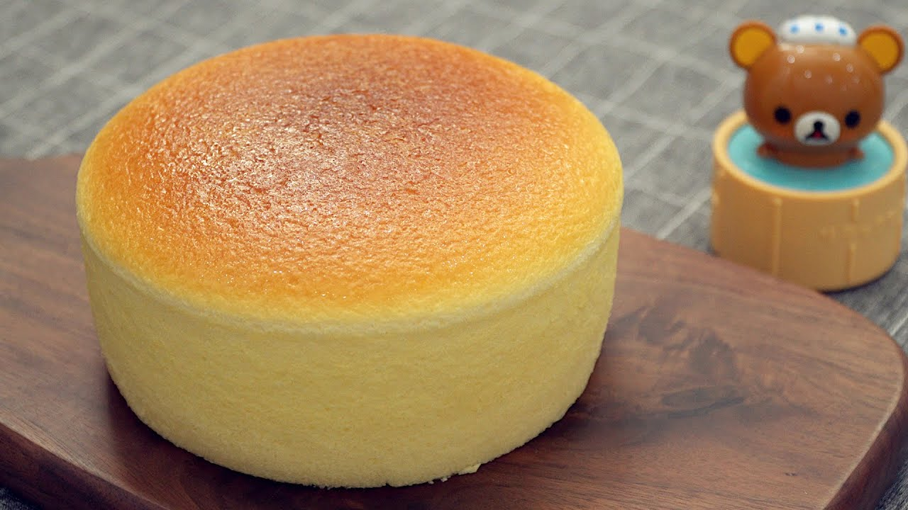

Japanese Cheesecake

Ingredients
- 6 large eggs
- 8 oz cream cheese
- 1/4 unsalted butter
- 1/2 cup of milk
- 1 table spoon of vanillar extract
- zest of 1 lemon (optional)
- 1 table spoon of lemon juice
- 1/2 cup of granulated sugard/li>
- 1/4 of potato starch(flours)
- 1 table spoon of corn starch
- a pinch of salt
Steps
- Mix in wet ingredients
- In a big mixing bowl, put in cream cheese, butter and milk
- In a small saucepan, put in about 1/2 cup of water and bring to boil.
Turn to medium heat and put the large mixing bowl on top of the pot.
Whisk gently until all ingredients are melted and mix homogeneously.
Remove mixing bowl from heat.
- Make meringue
- Seperate egg white to a big mixing bowl, egg yolks into a small bowl.
- Put granulated sugar in with egg white, and beat mixture to a firm peak
- Once the mix wet ingredients cool to room temp,
mix in vanila extract, lemon juice, lemon zest(optional),
salt, potato starch, and corn starch.
Mix them to form a homogenous mixture.
- Put the meringue in the wet mixture and gently fold in with a spatula(don't whisk),
until well mix.
- Preat heat overn to 275°F.
- Wrap a 9” cake pan in aluminum foil, make sure it is at least 4” tall and
water tight(this prevent water sip in the pan during baking).
- Line the bottom of the cake pan with parchment paper, and grease the
side of the pan with butter.
- Pour batter into cake pan, and tap the pan on counter gently to release airbubbles.
- In a cookie sheet, put in about 1/4 inch cold water, and put the cake pan in
- Bake in 275°F for 15min.
Turn the oven temp to 315°F and bake for another 60min.
Turn the oven temp to 350°F and bake for 10min.
Turn off oven, and leave the oven door close and the cake inside for an hour.
- Take out the cake to cool. You can enjoy it while it is warm, in room temp, or chilled.